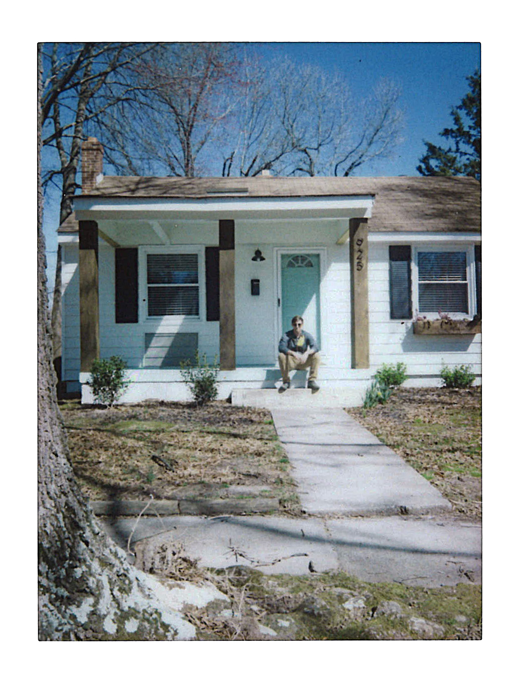

<div class="info">
  <h2 data-aos="fade-up" data-aos-delay="100" data-aos-duration="600">
    I wear plain black t-shirts, have fashionable glasses, and wear sandals out of season. I work across disciplines and mediums to create meaningful and well-crafted design systems, brands, typography and drawings. If I am not running, hiking, or mountain biking I am probably engaging in my own personal creative work down by the River.
  </h2>

  <h1 data-aos="fade-up" data-aos-delay="300" data-aos-duration="600">
    You can see of my work <a href="https://dribbble.com/johnmtlnd">here</a> and sometimes <a href="https://instagram.com/johnmtlnd">here</a>.
  </h1>

  <!--<p data-aos="fade-up" data-aos-delay="500" data-aos-duration="600">Currently I work for <a href="https://campfireandco.com/work">Campfire & Co.</a>, creating brands for clients across Virgina, often juggling web-design and illustration work as well.</p>-->

  <p data-aos="fade-up" data-aos-delay="700" data-aos-duration="600"> You can find me on <a href="https://twitter.com/johnmtlnd">Twitter</a> and <a href="https://instagram.com/johnmtlnd">Instagram</a> sharing scribbles and goings-on. If you’d like to share a deep loving email about what you are watching on Hulu, you can do that <a href="mailto:hello@johnmtlnd.com">here</a>.</p>
<hr />
  <h2>Past Clients & Projects</h2>
  {% if site.data.past-clients %}
    <ul class="past__client">
      {% for item in site.data.past-clients %}
        <li class="item"><a href="{{ item.url }}">{{ item.title }}</a> - {{ item.service }}</li>
      {% endfor %}
    </ul>
  {% endif %}
</div>



